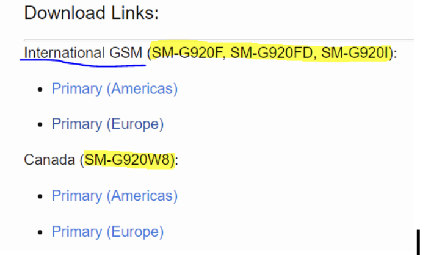

About booting read here.
What’s rooting?
Installing some program like su on the device to raise the privileges on the device. Requires patching the bootloader of installing a fully rooted OS image as well. Rooting is highly specific to device version.
Why to root?
Some apps don’t work otherwise, like VPN, Packet sniffers, SSL pinning disablers and etc, which are required for testing.
Samsung Galaxy S6 Example
Tools 🧰 needed:
Odin is a tool for troubleshooting and managing firmware on Samsung devices. It’s installed on the PC and is used here to install custom patched bootloader;
TWRP (custom patched bootloader which makes rooting itself possible but is not the rooting mechanism by itself). TWRP is a patched custom bootloader that allows installing rooting software. We install it on the device via Odin to be able to root the phone later.
Samsung Kies is like iTunes for Samsung. It has many features but we install it here simply to easy install required drivers.
Magisk is a tool, that performs rooting itself (installing su on the device). It is installed from TWRP bootloader menu and after installation and booting normally into the system you can find a Magisk Manager application on the device to control which apps are granted root privileges and also if you need to hide the fact the phone is rooted. It’s downloaded on the PC and then copied to the device via adb tool without unzipping it.
Developer’s mode. It’s the mode you can turn on on an Android device. Allows several useful settings to be used including the one we actually need - USB debugging. There are some differences between devices, but for this device it’s the following: Settings -> About device -> Software info -> Build number -> tap 7 times until the mode is enables.
USB debugging. It’s an option when Developer’s mode is on. It allows connecting to the phone over USB and using adb for lot’s of useful staff. To turn it on go to Settings -> Developer Options -> USB debugging -> on.
Prerequisites:
- Download Odin from here: https://samsungodin.com.
- Download TWRP here, tar archive.
- Download Samsung Kies here.
- Download Magisk zip file, latest stable version. Here is the root link in case you need another version. And here is the version used for this phone by me.
- Enable Developer’s mode
- Turn on USB debugging
- For some devices (like this one) also enable custom OEM switch in the Developer’s settings as well.
- To find out whether the phone is of international model, turn it over and find the serial number. The serial number is of the following style: SM-G920FD. Check this number against the list here: https://twrp.me/samsung/samsunggalaxys6.html.

Troubleshooting
❓ Problem: Some of the links don’t open
✍️ Fix: Try using VPN
Problem ❓: None knew the PIN code
Fix ✍️: Enter the recovery mode by pressing Volume Increase + Home + Power Buttons. There I’ve chosen “factory reset” and then restart.
Problem ❓: Unable to turn off the phone without a PIN
Fix ✍️: Discharge the phone manually.
Problem ❓: Bootloop, i.e. the phone stuck on Samsung logo screen.
Fix 1 ✍️: Things I’ve tried to solve the issue can be viewed here: https://youtu.be/vRo4cMxqd7U. Neither of the steps helped, so I’ve started overwriting the bootloader with a custom version for rooting.
Fix 2 ✍️: Wait really long for the device to boot completely. First boot after factory reset or twrp installation may need several minutes.
Rooting Steps
📲 Restart the phone and enter the Download mode (Volume Decrease + Home + Power Buttons).
🖥️ Open Odin (note the ID:COM bar is not empty). If it is, the phone is not seen by the system. It’s supposed to look like this:

Click Options tab in Odin, check Auto Reboot and F. Reset Time, uncheck everything else. Click AP button and find your TWRP tar file you’ve downloaded during Prerequisites steps.
📲 Make sure the phone is charged 80% or above. Enter the Download mode with Volume Decrease + Home + Power Buttons pressed.
💻 In Odin click Start. Wait until the phone starts to reboot. You’ve installed custom bootloader, if you see “Succeded” in Log tab in Odin. Be quick!
Problem: 📲 Message on the phone “Downloading. Do not turn off the target” + Odin doesn’t see the phone. The phone is not rebooted. Odin cannot do anything.
Fix 1: Install Samsung USB drivers (https://www.samsung.com/in/support/kies/) on PC + restart PC.
Fix 2: Find another cable
📲 Volume Increase + Home + Power, then release the Power button while the main logo is on the screen. You’ll enter the TWRP menu.
📲 Click Install button, find Magisk.zip on the phone (in this example, directly on sdcard). Select reboot after install option (or something alike). Wait for the software to be installed. TWRP might ask to install its app. Say yes.
💻 After all the installations and booting normally into the system, open adb shell and try su options. The message o the device from Magisk will ask whether you want to grant the shell privileged permissions. Click ok and you are done. The phone is rooted.
Samsung Galaxy J1, 2016 Example
Prerequisites
- Download Odin from here.
- Download TWRP
- Download Samsung Kies from here.
- Download Magisk zip file, latest stable version. Here is the root link in case you need another version. And here is the version used for this phone by me.
- Enable Developer’s mode and then USB debugging first. Activate Developer’s mode on the 📲. Settings 🡪 About device 🡪 Software info 🡪 Build number 🡪 tap 7 times until the mode is enables. Then go to Settings 🡪 Developer Options 🡪 USB debugging 🡪 on. For international version that’s all. For others – also enable custom OEM switch here. To find out whether the phone is of international model, turn it over and find the serial number. The serial number is of the following style:
SM-G920FD. Check this number against the list here.
Rooting
Problem ❓: None knew the PIN code
Fix ✍️: Enter the recovery mode by pressing Volume Increase + Home + Power Buttons. There I’ve chosen “factory reset” and then restart.
Problem ❓: Unable to turn off the phone without a PIN
Fix ✍️: Discharge the phone manually.
Problem: Bootloop, i.e. the phone stuck on Samsung logo screen.
Fix 1 ✍️: Things I’ve tried to solve the issue can be viewed here: https://youtu.be/vRo4cMxqd7U. Neither of the steps helped, so I’ve started overwriting the bootloader with a custom version for rooting.
Fix 2 ✍️: Wait really long for the device to boot completely. First boot after factory reset or twrp installation may need several minutes.
📲 Restart the phone and enter the Download mode (Volume Decrease + Home + Power Buttons).
💻 Open Odin (note the ID:COM bar is not empty). If it is, the phone is not seen by the system. It’s supposed to look like this:
Click Options tab in Odin, check Auto Reboot, uncheck everything else. Click AP button and find your TWRP tar file you’ve downloaded (recovery.tar.md5) during Prerequisites steps.
📲 Make sure the phone is charged 80% or above. Enter the Download mode with Volume Decrease + Home + Power Buttons pressed.
💻 In Odin click Start. Wait until the phone starts to reboot. You’ve installed custom bootloader, if you see “Succeded” in Log tab in Odin.
Problem: 📲 Message on the phone “Downloading. Do not turn off the target” + Odin doesn’t see the phone. The phone is not rebooted. Odin cannot do anything.
Fix 1 ✍️: Install Samsung USB drivers (https://www.samsung.com/in/support/kies/) on PC + restart PC.
Fix 2 ✍️: Find another cable
📲 TWRP will be flashed and the device will reboot itself in recovery mode. 📲 Turn off the device, press Volume Increase + Home + Power Buttons to enter the TWRP menu. Click Install button, find Magisk.zip on the phone (in this example, directly on sdcard). Select reboot after install option (or something alike). Wait for the software to be installed. TWRP might ask to install its app. Say yes.
💻 After all the installations and booting normally into the system, open adb shell and try su options. The message on the device from Magisk will ask whether you want to grant the shell privileged permissions. Click ok and you are done. The phone is rooted.
- Open up the Odin
2- Click the AP button and select the recovery.tar.md5 file.
3- Open your phone with combination of home button & volume decrease button and power button. After “Warning” text show up click the volume increase button.
4- Plug your phone to PC.
5- Select the “Auto Reboot” option in “Options” and unselect the others.
6- Click to Start. TWRP will be flashed and the device will reboot itself in recovery mod.
Г. Установка Magisk через TWRP
\1. Выключаем телефон, включаем с домой+выкл+звук !вверх!
\2. install - находим там magisk и ставим, потом жмем reboot че-то там
\3. Ставим апк магиск менеджер
\4. Хакаем
References
[1] Android Rooting Process Types